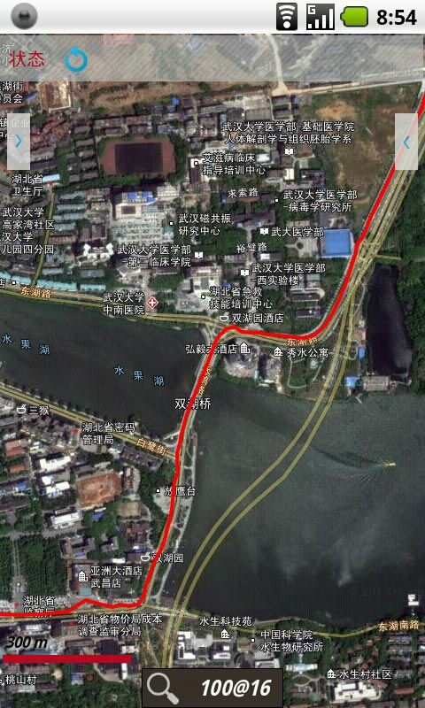
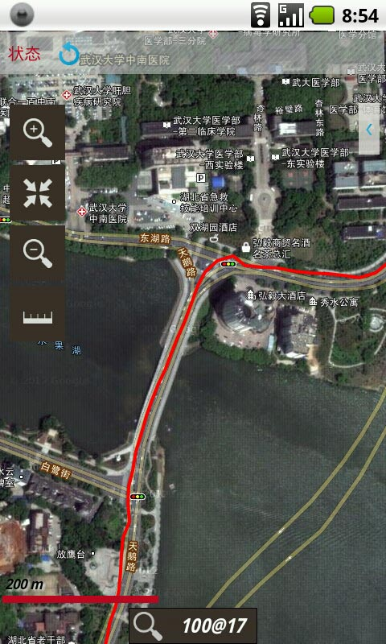
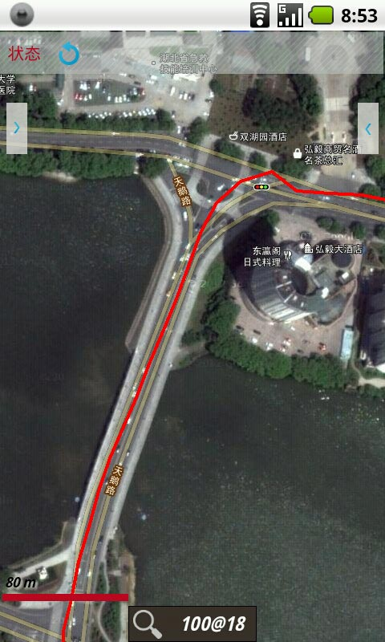
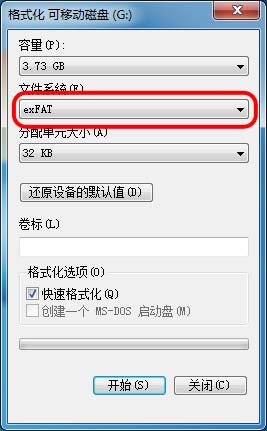
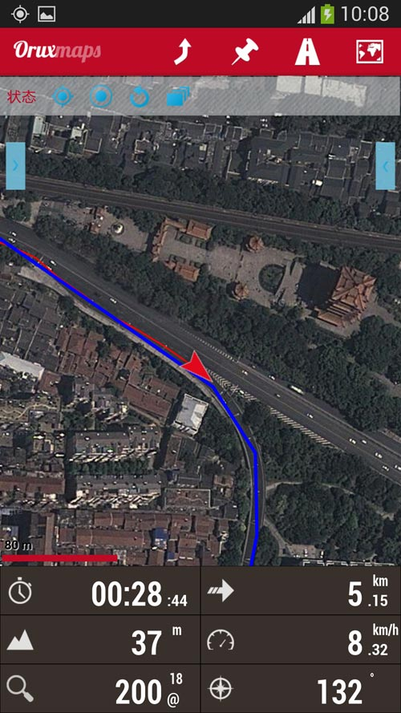
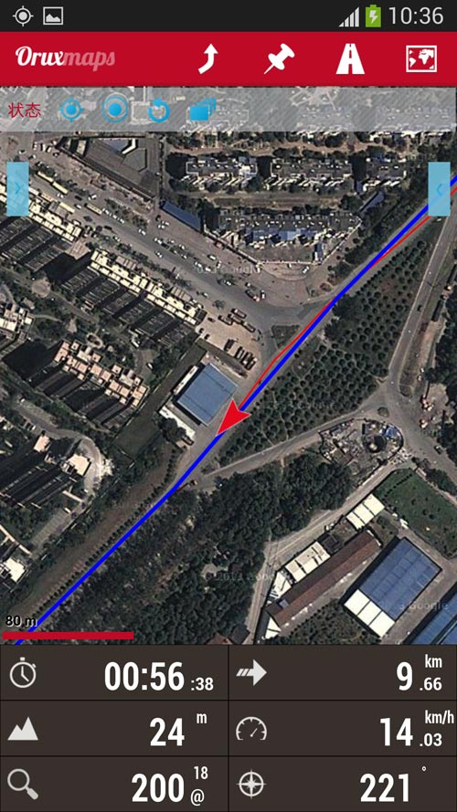
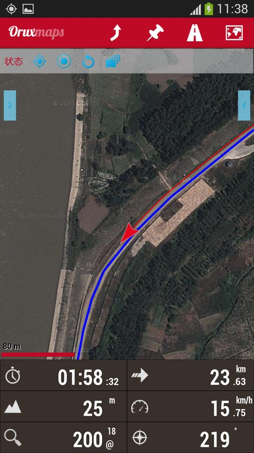
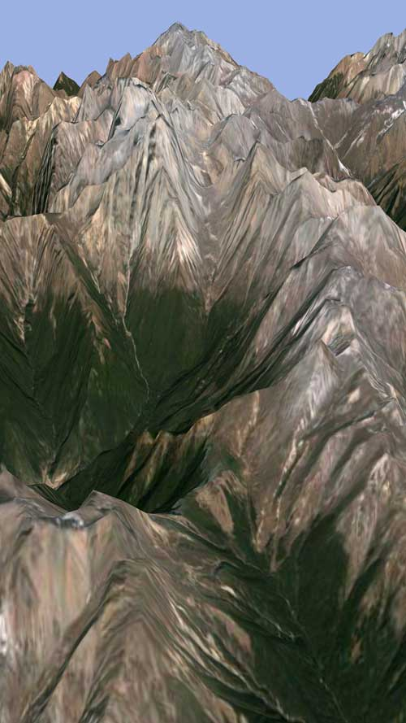
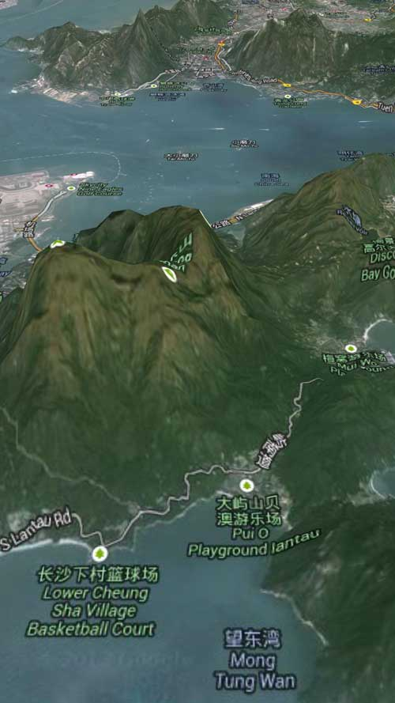
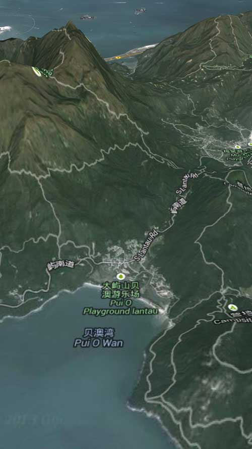

|
| 首页 | GeoTIFF | 今日花园Maps | OruxMaps | OZI | 资源 | 软件 | 联系 |
| 当前位置：OruxMaps |
|
★ OruxMaps离线地图数据包的安装与使用 ★ 在OruxMaps地图中加载KML或者GPX的线路与航点 ★ OruxMaps安装高程数据并显示三维卫星地图 ★ 在OruxMaps中显示温度、相对湿度、气压、罗盘等数据 ★ 在高清屏下OruxMaps的地图缩放功能应用 ★ 在电脑上通过安卓系统模拟器运行OruxMaps程序 ★ 一款在WINDOWS系统上运行的OruxMaps软件OruxWin 本站制作的谷歌卫星地图数据包含多层级的数据，在OruxMaps中可以实现多层级的缩放。数据包的图片都是从谷歌地图国外服务器上获取的，没有坐标偏移，所以地图可以实现准确的坐标定位。你可以将航迹导入到地图中来验证坐标的准确性。如下图所示： |



|
卫星地图可以带地名。对于中国大陆地区，16层及以下只能带天地图的地名，17层及以上不带地名。对于中国大陆以外的地区，地名标注可以有以下三种类型： 1) 本地文字，地图是哪个国家就用哪国的文字标注。例如：法国地名标注用法文、德国地名标注用德文。 2) 中文，地名标注用中文(其中可能参杂有英文和本地文字)。 3) 英文，地名标注用英文(其中可能参杂有本地文字)。 OruxMaps离线卫星地图的使用： 1） 安卓系统的手机、平板电脑安装OruxMaps软件 2） Windows系统电脑安装OruxWin软件 安卓系统OruxMaps下载地址：oruxmaps(6.5.9版本)压缩包 Oruxmaps 导航软件使用说明书：Oruxmaps4.4版导航软件使用说明书.rar 说明：是V4.4版的使用说明书，现在软件更新后界面都有许多的变化，但基本功能都是相同的，此说明书仅供参考。 OruxWin软件的最新信息请看：OruxWin在线帮助 本站免费提供OruxMaps世界4-8层和全国3-10层离线卫星地图给大家试用，下载地址： 世界4-8层卫星地图(450M) 全国3-10层离线卫星地图(1.01G) 本站提供的OruxMaps离线卫星地图，是一个文件夹，将整个文件夹复制到OruxMaps程序目录下的mapfiles目录中。注意：文件夹的名称不能改动，否则打不开地图。 注意： 1) 一般的安卓手机只支持FAT32格式的TF卡，FAT32格式的TF卡单个文件的大小不能超过4G。 2) 三星Galaxy S3、S4等安卓手机能支持exFAT格式的TF卡，exFAT格式的TF卡对文件大小没有限制。 3) 在WINDOWS操作系统的电脑中，Windows XP需要安装补丁才能支持exFAT格式，Vista SP1及以后版本都支持exFAT格式。 4) 将TF卡放到读卡器中，把读卡器插入支持exFAT格式的电脑上，就可以对TF卡进行exFAT格式化。如下图所示，文件系统选择exFAT，其它默认值。 |

|
下图是三星Galaxy S4安装OruxMaps软件后使用OruxMaps离线卫星地图的效果图（图中使用的是18层分辨率的地图）。 |



|
OruxMaps在使用离线卫星地图时，如果加载了高程数据，还能显示三维卫星地图。凡在本站购买OruxMaps离线卫星地图的，加5元可购买该地区的高程数据文件。 |



|
需要制作的用户请到本站的淘宝店购买。 |
| www.todaygarden.net |
版权所有 2010-2020 今日花园 |